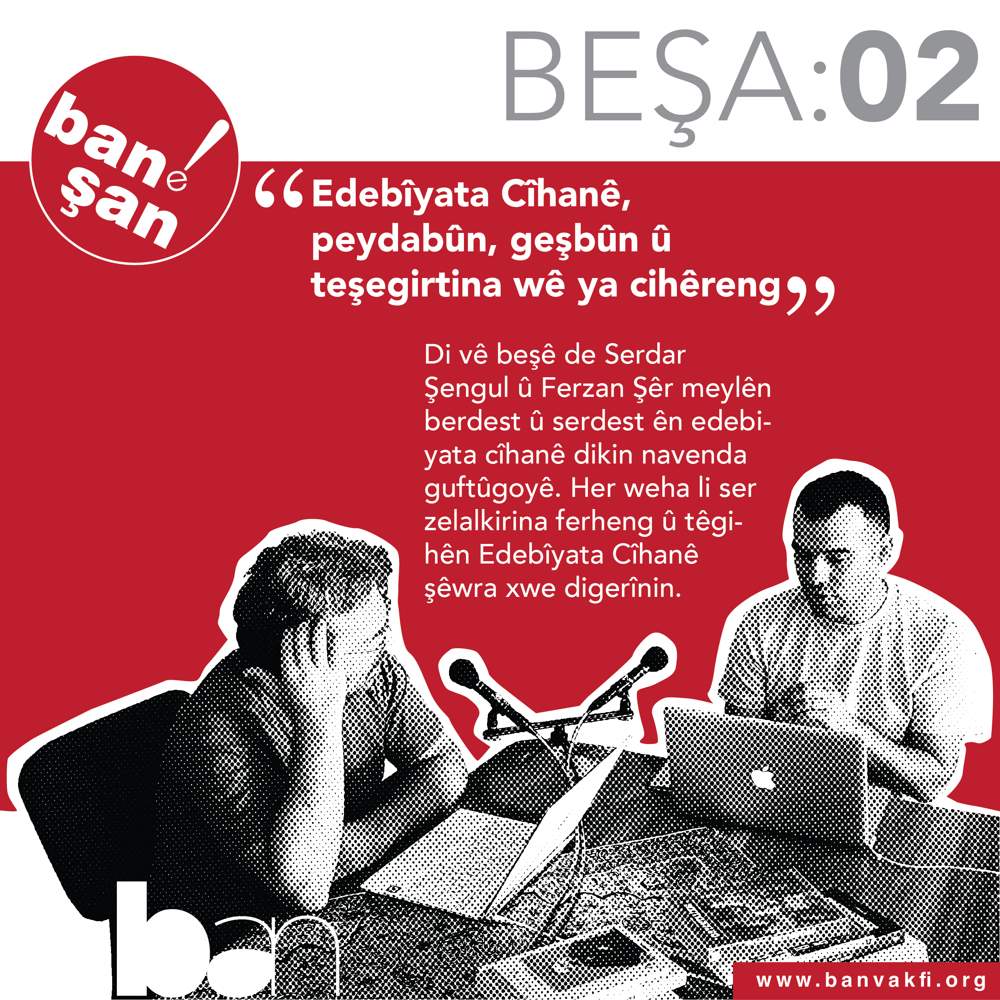
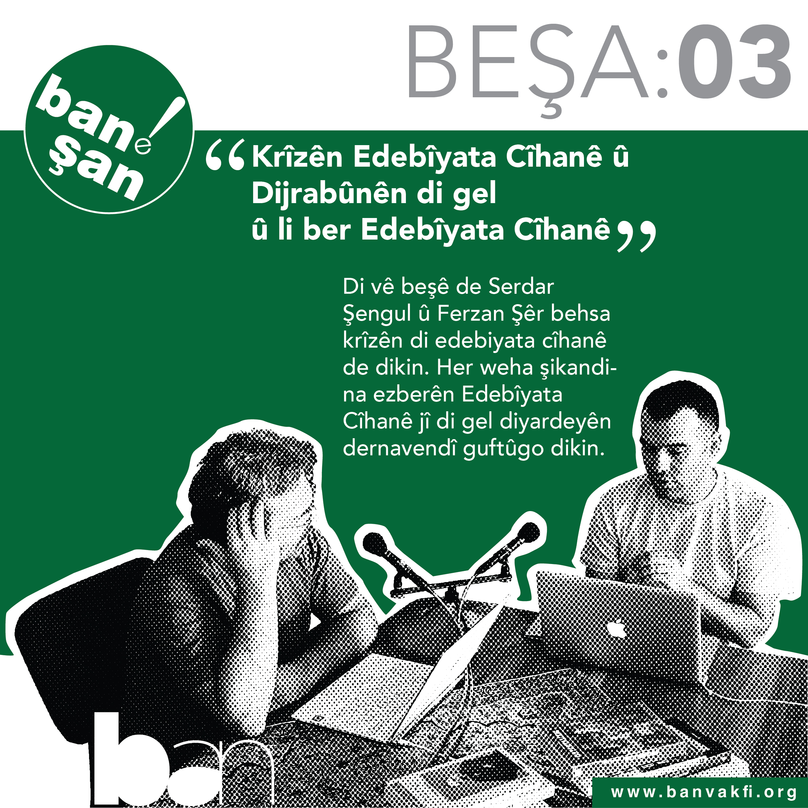
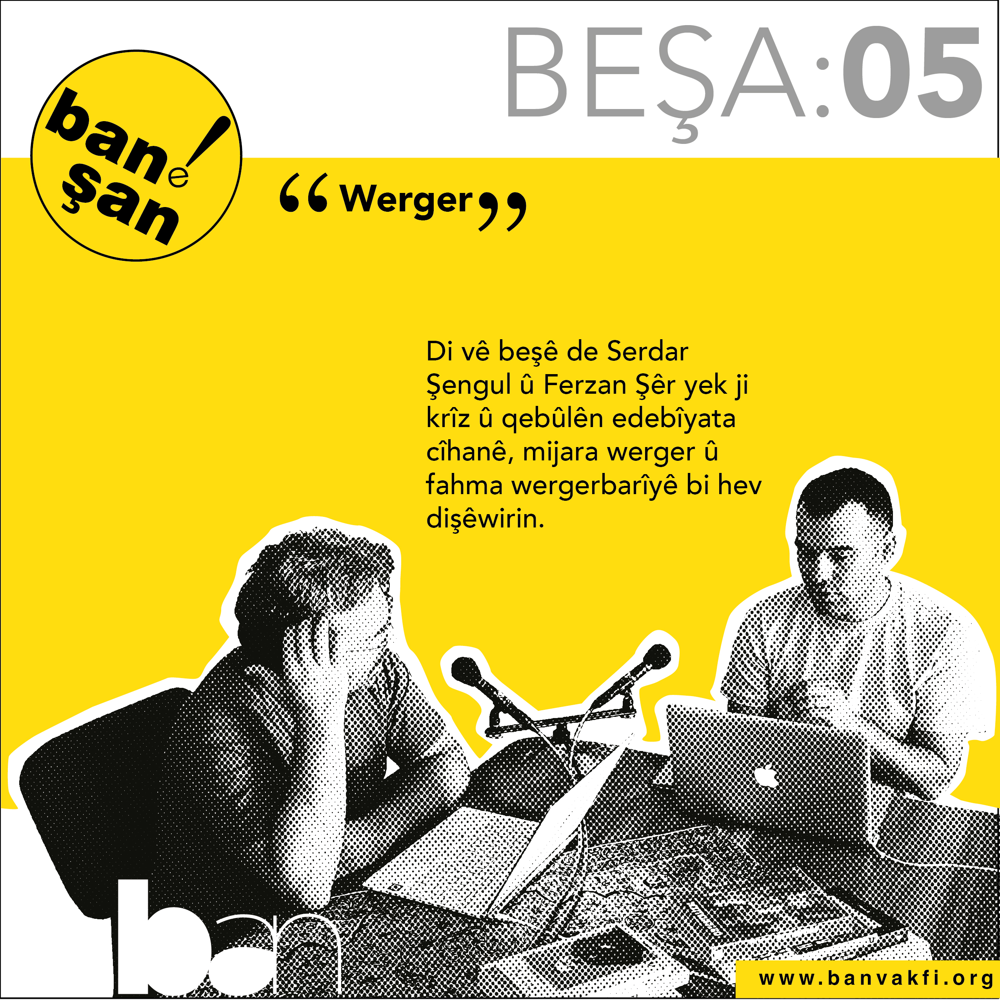
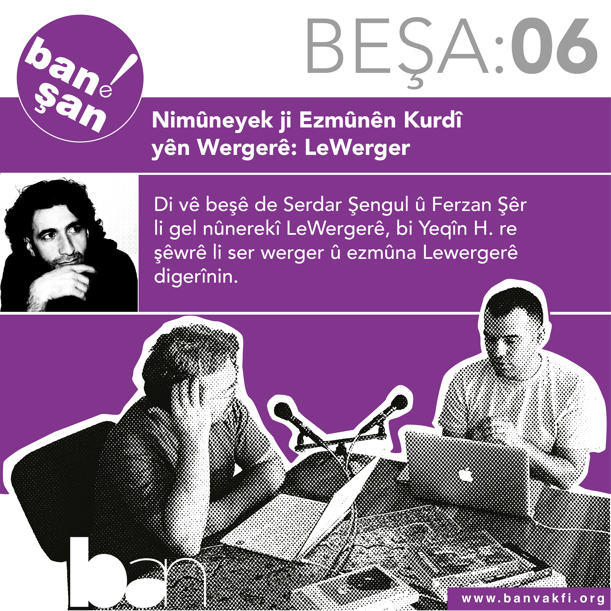
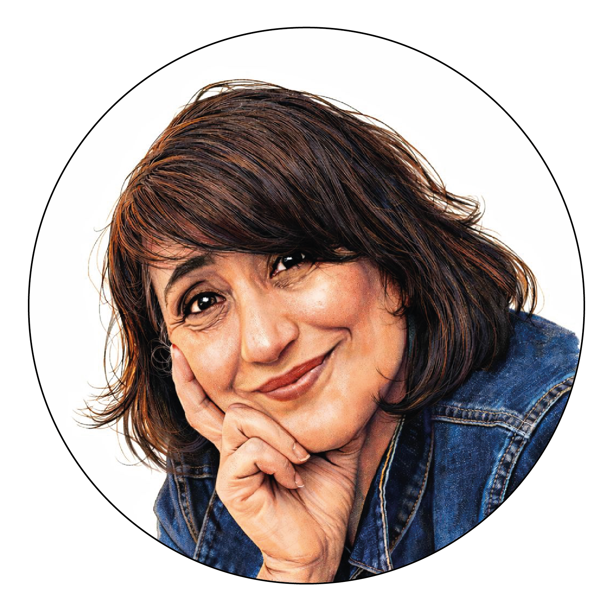

✍️
Gönüllülük Nedir?
Gönüllü çalışmanın bireysel ve sosyal kazanımları.
Devamını Oku →BAN Vakfı Blog & Podcast Platformu

HESENÊ DEWRÊŞ

HESENÊ DEWRÊŞ

HESENÊ DEWRÊŞ

HESENÊ DEWRÊŞ

HESENÊ DEWRÊŞ



Ban Bilim Kültür ve Sanat Vakfı, 20 kişiden ulaşan kurucuların bir araya gelmesiyle 31.12.2022 tarihinde İstanbul’da kuruldu. Sivil toplum alanında yaşanan sorunlar ve çözümleri konusunda benzer düşünen kurucular, kendi alanlarında sivil toplumun gelişmesine katkı sunacak, bilgi birikim ve donanımlarını ortaya koyarak yeni bir vizyon ile yola çıkıp bir vakıf kurma konusunda mutabakata vardılar. 2022 Ocak ayında kendi aramızda kurulacak vakfın amaç ve misyonunu, faaliyet alanlarını tartıştığımız bir düzine toplantı gerçekleştirdik. Kurucuların ortak bir dile sahip olmaları ve ortak yaklaşım taşımaları önemliydi. Bu toplantılarda netleşme sağlandıktan sonra Aralık 2022’de resmen başvuruda bulunduk yasal olarak kuruluşumuzu tamamladık. Kuruluş nedenimizi kısaca özetlersek; Türkiye’de özellikle son on yılda sivil toplum alanı gittikçe daralmıştır. Demokrasi ve insan hakları alanında çalışma yürütenlerin işini zorlaştıran, gücünü azaltan dışsal ve içsel pek çok neden bulunmaktadır. Sivil toplum kuruluşları, çalışmalarını topluma ulaştırmada çeşitli zorluklar yaşamaktadır. Bu zorluklar bazen Türkiye’deki devlet aygıtlarının açık ve gizli baskısından kaynaklı olmakta bazen de bizzat sivil toplum örgütlerinin aşamadığı kendi örgütsel yapılarındaki problemlerden kaynaklanmaktadır. Türkiye’de sivil toplum örgütlerinin tarihçesi çok eskiye dayanmamaktadır. Vakfımızın çalışmalarına esas aldığı Kürt sivil alanındaki organizasyonların tarihi ise çok daha yenidir. Kürtlerin içinde bulunduğu kamusal alan çok dağınık ve pek çok yapısal sorunları barındırmaktadır. Kürt çalışmalarını ele alan sivil toplum örgütleri var olma ve yok olma arasında ince bir çizgide duruyorlar. Devletin otoriter yapısı ve Kürtlerin hala ulus, halk, azınlık vb. hiçbir hak kategorisinden yararlanmamasının sonucu olarak Kürtlerin kurduğu sivil toplum örgütleri hiçbir devlet desteği alamamaktadır. Buna bir de bizzat sivil toplum örgütlerinin kendi içinde taşıdığı kurumsallaşma ve kolektivizmden uzak olma, kimi zaman erkek egemen yönetim biçiminin baskın gelmesi gibi unsurlar eklenebilir. Pek çok sivil toplum örgütünün bizzat kendisi çalışanlara, kadınlara ve LGBT+ bireylere haksızlık ve ayrımcılık içeren davranışlardan arınmış değildir. Tüm bunlara rağmen özellikle etkisi sınırlı olmakla beraber, son yirmi yılda başarılı sivil toplum çalışmaları örnekleri de umut vericidir. Kürt çalışmalarını merkeze alan sivil toplum çalışmaları Kürt kamusal alanına kalıcı olarak etkide bulunabilecek niteliğe ise henüz kavuşamadı. Vakıf kurucularının tümü hem sivil alan tanımında hem de sivil toplum örgütlerinin yaşadıkları içsel ve dışsal sorunlar konusunda benzer yaklaşıma sahip insanlardır. Kurucular yeni bir vakıf ile, daha vizyoner, tamamen şeffaf, demokratik işleyişe sahip ve iş üreten bir sivil toplum örgütü olma iddiasındadırlar. Kurucular, sivil alan deneyimlerinden yola çıkarak daha ileri bir vizyona sahip bir sivil toplum örgütü hayata geçirilebilir mi sorusu etrafında bir araya geldiler. Tartışmaların devamında “Kürt kamusal alanına sivil toplum örgütleri üzerinden yapıcı müdahaleler ile üretim yaparak katkıda bulunulabilir mi?” sorusuna da cevap arandı. Bu tartışmalar çok heyecan verici ve çok geliştiriciydi. Önce mevcut durumun analizi yapıldı, hem dışarıdan hem de içeriden iyi bir sivil toplum örgütü önündeki engellerin neler olduğu masaya yatırıldı. Türkiye’de sivil toplum alanında çalışan kişi ve kurumların önündeki en büyük engelin devletin anti demokratik yapısı olduğu açıktı. İktidar, kendi ideolojisini paylaşmayan kişi ve kurumları, ötekileştirmekte ve kriminalize etmektedir. Böylece sivil alanın etki gücünü kırıp dar bir alana hapsetmektedir. Masaya yatırılan bir diğer konu da sivil yapıların iç sorunları idi. Kollektif hareket etme kültürünün az olması, demokrasi kültürünün bizzat sivil toplum örgütlerinde yerleşmemesi, yönetim kurullarının, sivil toplum idarecilerinin yıllarca değişmemesi, zaman içerisinde kendini tekrar etmesi, kalıcı işler yapılmaması, ekonomik sorunlar, iş birliklerinin geliştirilememesi, ağlar oluşturulamaması, bir süre sonra sivil toplum örgütünün başlangıçtaki amaçlarından tamamen farklı noktalara savrulmasına neden oluyor. BAN Vakfı kurucuları yukarıdaki tespitlerde ve çözüm yollarında hemfikir olarak yola çıktılar. Vakfın kurucularının her biri daha önce çalıştıkları kurumları ileri taşımış, değer katmış, kolektif ve demokratik bir işleyişe dair fikri ve pratiği olan kişilerdir. Ayrıca tamamen sivil alan inşa etme süreçlerine dair değerli bilgi birikimine sahiplerdir. Kurucuların BAN Vakfı öncesi çalışmalarda birbirleri ile kesiştiği yollar bugün BAN Vakfına giden taşları döşemiştir. Türkiye’nin saygın ve önemli sivil toplum örgütlerinden, Kürt çalışmaları alanından, kadın ve çocuklara dair çalışmalar yapan, hafıza çalışmaları, çağdaş sanat, müzik, tiyatro vb alanlarda örgütlü ya da bireysel üretim yapan kurucularımız bulunmaktadır. 20 kişilik kurucu ekibimizden 12’si kadın olup, sanatçı, yazar, şair, çevirmen, doktora öğrencisi, avukat, eczacı, finansçı, sosyolog, tiyatro yönetmeni gibi farklı alan ve disiplinden gelen insanlardır.
Görüş, öneri ve iş birlikleri için bizimle iletişime geçebilirsiniz.